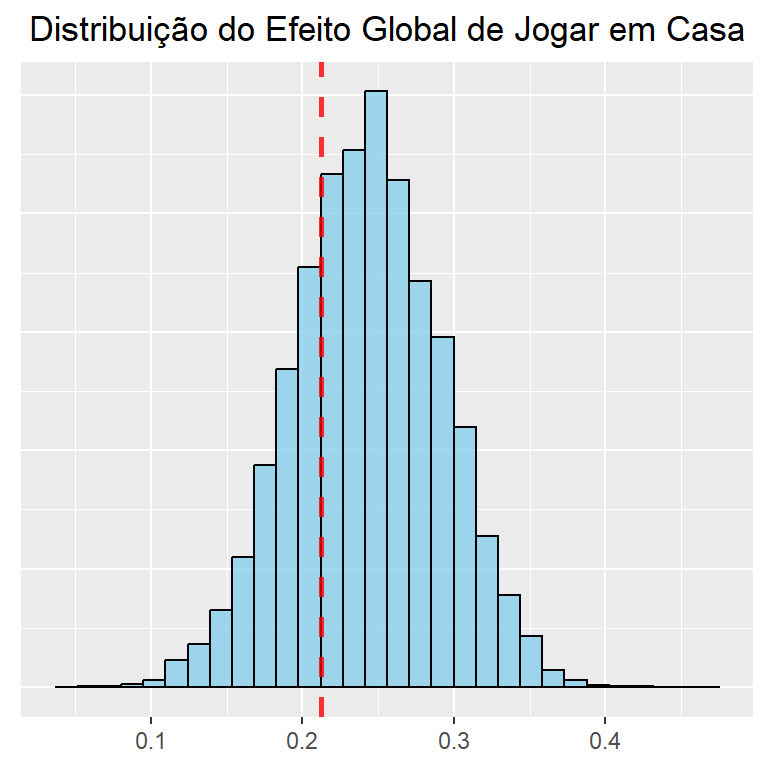
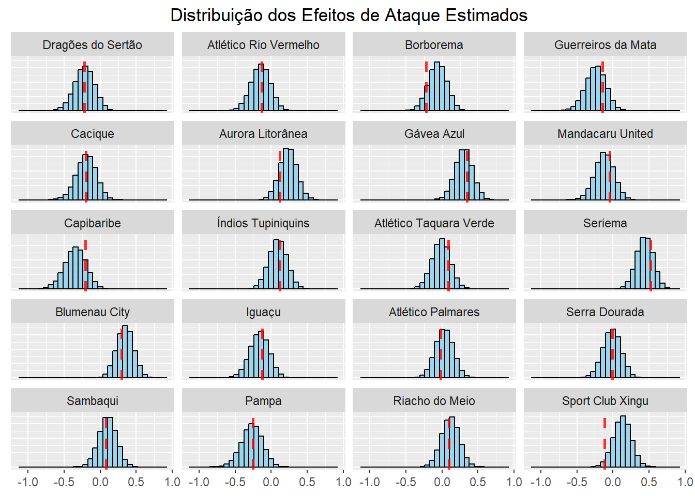
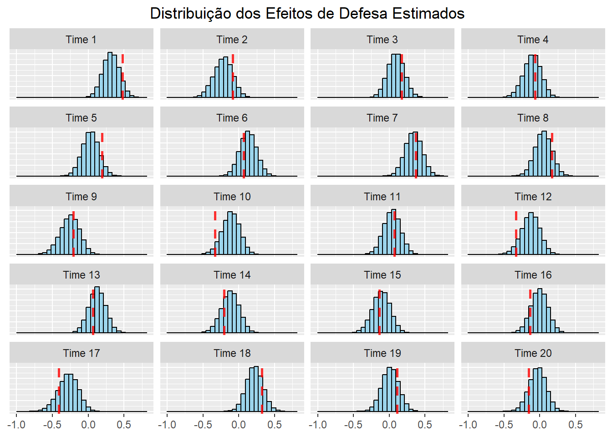
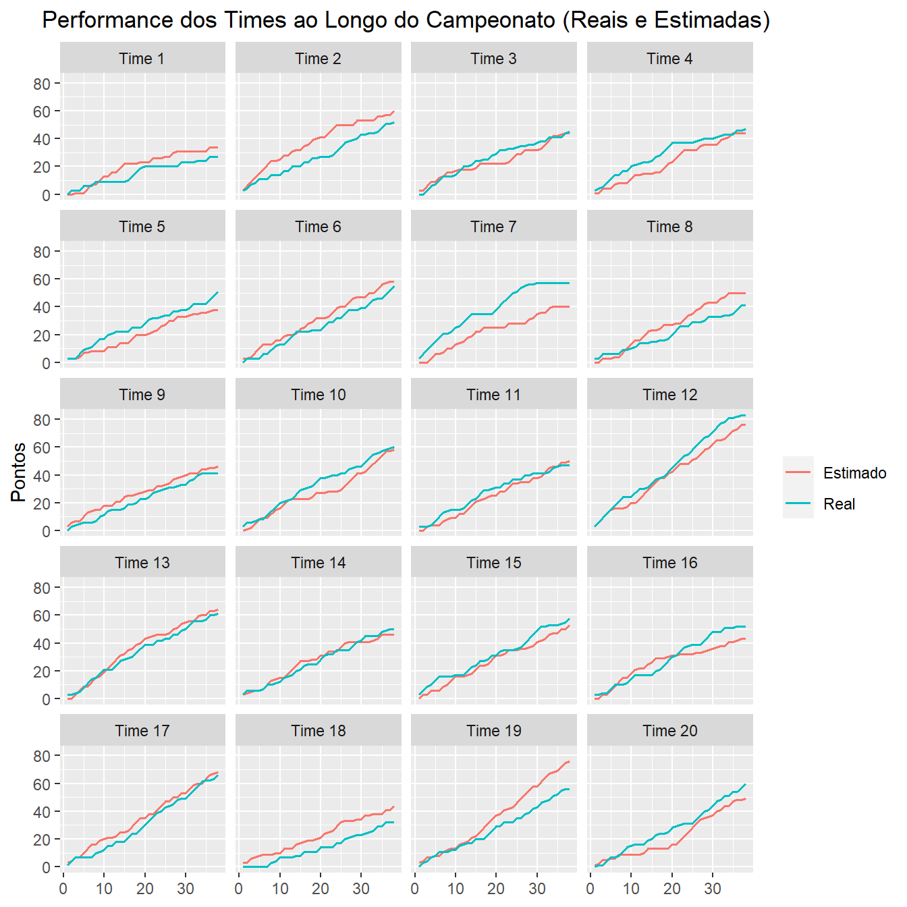

require(tidyverse)
require(plotly)
require(knitr)
require(rstan)
require(reshape2)Modelo Poisson Simples
Importanto as bibliotecas necessárias
Gerando os jogos
num_teams <- 20
games <- data.frame(
h = rep(1:num_teams, each = num_teams),
a = rep(1:num_teams, times = num_teams)
)
games <- games[games$h != games$a, ]Definindo os valores reais
set.seed(40)
# Utilizando os valores encontrados no artigo
home_effect <- 0.2124
att_effects <- c(-0.2238, -0.1288, -0.2199, -0.1468, -0.1974, 0.1173, 0.3464, -0.0435,
-0.2077, 0.1214, 0.0855, 0.5226, 0.2982, -0.1208, -0.0224, -0.0096,
0.0824, -0.2532, 0.0923, -0.1189)
def_effects <- c(0.4776, -0.0849, 0.1719, -0.0656, 0.1915, 0.0672, 0.3701, 0.1700,
-0.2061, -0.3348, 0.0722, -0.3349, 0.0668, -0.2038, -0.1358, -0.1333,
-0.4141, 0.3259, 0.1123, -0.1554)- \(home\) = 0.2124
Esses foram os efeitos de ataque e defesa escolhidos:
Gerando os resultados dos jogos
set.seed(40)
simulate_game <- function(home_team, away_team){
theta_1 <- home_effect + att_effects[home_team] + def_effects[away_team]
theta_2 <- att_effects[away_team] + def_effects[home_team]
y1 <- rpois(1, exp(theta_1))
y2 <- rpois(1, exp(theta_2))
return(c(y1, y2))
}
num_games <- length(games$h)
# Tapa buracos enquanto os resultados nao sao gerados
games$y1 <- rep(0, num_games)
games$y2 <- rep(0, num_games)
for(i in 1:num_games){
home_team <- games[i, ]$h
away_team <- games[i, ]$a
result <- simulate_game(home_team, away_team)
games[i, ]$y1 <- result[1]
games[i, ]$y2 <- result[2]
}Alguns dos resultados gerados foram:
| Mandante | Visitante | Gols_do_Mandante | Gols_do_Visitante |
|---|---|---|---|
| 1 | 2 | 1 | 3 |
| 1 | 3 | 2 | 0 |
| 1 | 4 | 0 | 1 |
| 1 | 5 | 0 | 1 |
| 1 | 6 | 1 | 0 |
| 1 | 7 | 0 | 3 |
Análise dos resultados gerados
Alguns resultados que nos dão uma visão geral dos dados são:
- O time com o melhor ataque da competição foi o Time 12 balançando as redes 76 vezes.
- O time com o pior ataque da competição foi o Time 9 marcando 26 gols.
- O time com a melhor defesa da competição foi o Time 9 tendo sofrido um total de 22 gols.
- O time com a pior defesa da competição foi o Time 7 tendo sofrido um total de 63 gols.
- A maior goleada do campeonato foi a vitória do Time 10 por 5 a 0 em cima do Time 1
- O Time 12 foi o campeão com 83 pontos
- O Time 1 foi o lanterna com 27 pontos
- O Time 3 foi o primeiro time fora da zona, se salvando do rebaixamento com 45 pontos
Clique para ver a tabela do campeonato completa
| Posicao | Time | Pontos | Vitorias | Empates | Derrotas | GM | GS | SG |
|---|---|---|---|---|---|---|---|---|
| 1 | Time 12 | 83 | 25 | 8 | 5 | 76 | 48 | 28 |
| 2 | Time 17 | 66 | 19 | 9 | 10 | 51 | 27 | 24 |
| 3 | Time 13 | 61 | 17 | 10 | 11 | 67 | 57 | 10 |
| 4 | Time 10 | 60 | 14 | 18 | 6 | 50 | 45 | 5 |
| 5 | Time 20 | 60 | 16 | 12 | 10 | 52 | 40 | 12 |
| 6 | Time 15 | 58 | 16 | 10 | 12 | 46 | 38 | 8 |
| 7 | Time 7 | 57 | 17 | 6 | 15 | 63 | 63 | 0 |
| 8 | Time 19 | 56 | 15 | 11 | 12 | 51 | 40 | 11 |
| 9 | Time 6 | 55 | 17 | 4 | 17 | 59 | 52 | 7 |
| 10 | Time 2 | 52 | 14 | 10 | 14 | 36 | 32 | 4 |
| 11 | Time 16 | 52 | 15 | 7 | 16 | 43 | 32 | 11 |
| 12 | Time 5 | 51 | 14 | 9 | 15 | 33 | 35 | -2 |
| 13 | Time 14 | 50 | 13 | 11 | 14 | 35 | 30 | 5 |
| 14 | Time 4 | 47 | 11 | 14 | 13 | 31 | 25 | 6 |
| 15 | Time 11 | 47 | 12 | 11 | 15 | 43 | 41 | 2 |
| 16 | Time 3 | 45 | 11 | 12 | 15 | 40 | 35 | 5 |
| 17 | Time 8 | 41 | 11 | 8 | 19 | 37 | 37 | 0 |
| 18 | Time 9 | 41 | 8 | 17 | 13 | 26 | 22 | 4 |
| 19 | Time 18 | 32 | 8 | 8 | 22 | 29 | 31 | -2 |
| 20 | Time 1 | 27 | 8 | 3 | 27 | 31 | 46 | -15 |
Estimando os parâmetros com o STAN
data <- append(list(ngames = num_games, nteams = num_teams), as.list(games))
model <- stan_model("./models/model.stan")
fit <- sampling(model, data = data, iter = 10000, chains = 8, cores = 8)Warning: There were 25 divergent transitions after warmup. See
https://mc-stan.org/misc/warnings.html#divergent-transitions-after-warmup
to find out why this is a problem and how to eliminate them.Warning: There were 13267 transitions after warmup that exceeded the maximum treedepth. Increase max_treedepth above 10. See
https://mc-stan.org/misc/warnings.html#maximum-treedepth-exceededWarning: Examine the pairs() plot to diagnose sampling problemsWarning: The largest R-hat is 2.36, indicating chains have not mixed.
Running the chains for more iterations may help. See
https://mc-stan.org/misc/warnings.html#r-hatWarning: Bulk Effective Samples Size (ESS) is too low, indicating posterior means and medians may be unreliable.
Running the chains for more iterations may help. See
https://mc-stan.org/misc/warnings.html#bulk-essWarning: Tail Effective Samples Size (ESS) is too low, indicating posterior variances and tail quantiles may be unreliable.
Running the chains for more iterations may help. See
https://mc-stan.org/misc/warnings.html#tail-essdata {
int<lower=1> ngames;
int<lower=1> nteams;
int h[ngames];
int a[ngames];
int y1[ngames];
int y2[ngames];
}
parameters {
real home;
vector[nteams] att_star;
vector[nteams] def_star;
real mu_att;
real mu_def;
real<lower=0> tau_att;
real<lower=0> tau_def;
}
transformed parameters {
vector[nteams] att;
vector[nteams] def;
for (t in 1:nteams) {
att[t] = att_star[t] - mean(att_star);
def[t] = def_star[t] - mean(def_star);
}
}
model {
for (g in 1:ngames) {
y1[g] ~ poisson_log(home + att[h[g]] + def[a[g]]);
y2[g] ~ poisson_log(att[a[g]] + def[h[g]]);
}
home ~ normal(0, sqrt(1/0.0001));
mu_att ~ normal(0, sqrt(1/0.0001));
mu_def ~ normal(0, sqrt(1/0.0001));
att_star ~ normal(mu_att, sqrt(1 / tau_att));
def_star ~ normal(mu_def, sqrt(1 / tau_def));
tau_att ~ gamma(0.01, 0.01);
tau_def ~ gamma(0.01, 0.01);
}Visualizando os valores estimados



Simulando os resultados com os parâmetros estimados
Para simularmos os resultados do campeonato, usaremos a média da distribuição preditiva a posteriori dos parâmetros estimados
estimated_games <- games
simulate_game <- function(home_team, away_team){
theta_1 <- mean(home_eff$x) + mean(fit_data$att[,home_team]) + mean(fit_data$def[,away_team])
theta_2 <- mean(fit_data$att[,away_team]) + mean(fit_data$def[,home_team])
y1 <- rpois(1, exp(theta_1))
y2 <- rpois(1, exp(theta_2))
return(c(y1, y2))
}
for(i in 1:num_games){
home_team <- estimated_games[i, ]$h
away_team <- estimated_games[i, ]$a
result <- simulate_game(home_team, away_team)
estimated_games[i, ]$y1 <- result[1]
estimated_games[i, ]$y2 <- result[2]
}Resultados da simulação
Alguns resultados da competição simulada utilizando os parâmetros estimados:
- O time com o melhor ataque da competição foi o Time 12 balançando as redes 69 vezes.
- O time com o pior ataque da competição foi o Time 14 marcando 31 gols.
- O time com a melhor defesa da competição foi o Time 8 tendo sofrido um total de 28 gols.
- O time com a pior defesa da competição foi o Time 10 tendo sofrido um total de 56 gols.
- A maior goleada do campeonato foi a vitória do Time 11 por 5 a 0 em cima do Time 3
- O Time 12 foi o campeão com 76 pontos
- O Time 1 foi o lanterna com 34 pontos
- O Time 18 foi o primeiro time fora da zona, se salvando do rebaixamento com 44 pontos
Clique para ver a tabela do campeonato completa
| Posicao | Time | Pontos | Vitorias | Empates | Derrotas | GM | GS | SG |
|---|---|---|---|---|---|---|---|---|
| 1 | Time 12 | 76 | 23 | 7 | 8 | 69 | 44 | 25 |
| 2 | Time 19 | 76 | 21 | 13 | 4 | 61 | 38 | 23 |
| 3 | Time 17 | 68 | 20 | 8 | 10 | 54 | 41 | 13 |
| 4 | Time 13 | 64 | 17 | 13 | 8 | 60 | 50 | 10 |
| 5 | Time 2 | 60 | 18 | 6 | 14 | 45 | 29 | 16 |
| 6 | Time 6 | 58 | 16 | 10 | 12 | 60 | 54 | 6 |
| 7 | Time 10 | 58 | 16 | 10 | 12 | 52 | 56 | -4 |
| 8 | Time 15 | 53 | 14 | 11 | 13 | 39 | 39 | 0 |
| 9 | Time 8 | 50 | 14 | 8 | 16 | 39 | 28 | 11 |
| 10 | Time 11 | 50 | 13 | 11 | 14 | 40 | 34 | 6 |
| 11 | Time 20 | 49 | 13 | 10 | 15 | 46 | 38 | 8 |
| 12 | Time 9 | 46 | 10 | 16 | 12 | 38 | 41 | -3 |
| 13 | Time 14 | 46 | 12 | 10 | 16 | 31 | 36 | -5 |
| 14 | Time 3 | 44 | 12 | 8 | 18 | 36 | 46 | -10 |
| 15 | Time 4 | 44 | 12 | 8 | 18 | 33 | 31 | 2 |
| 16 | Time 18 | 44 | 10 | 14 | 14 | 33 | 40 | -7 |
| 17 | Time 16 | 43 | 10 | 13 | 15 | 39 | 50 | -11 |
| 18 | Time 7 | 40 | 11 | 7 | 20 | 50 | 55 | -5 |
| 19 | Time 5 | 38 | 9 | 11 | 18 | 39 | 43 | -4 |
| 20 | Time 1 | 34 | 10 | 4 | 24 | 35 | 45 | -10 |
